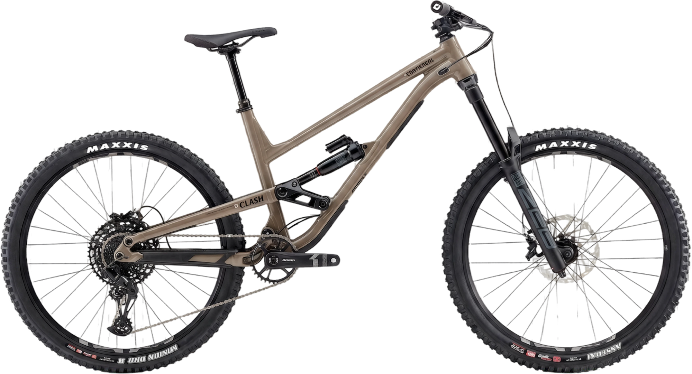
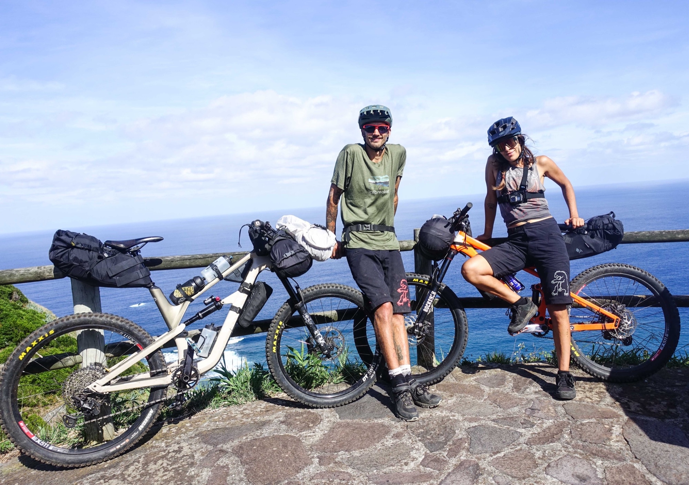

Get in touch
Get in touch
Get in touch
Get in touch
Bookings
Adventure is for all. First time on a trail or full-on dirt shredder — we show you the island from a different perspective.
Ride with us
The beasts

About us
In the spring of 2023 we packed our passion in life and shipped it over to São Miguel — 2 enduro bicycles, 2 surf boards and a bike trailer.
Wheels on Fire is born, out of the burning passion of riding, travelling, nature and adventure — we want to take you, your family & friends to the incredible trails and places that for us truly define the essence of this amazing island.

Brands that support us
Google reviews